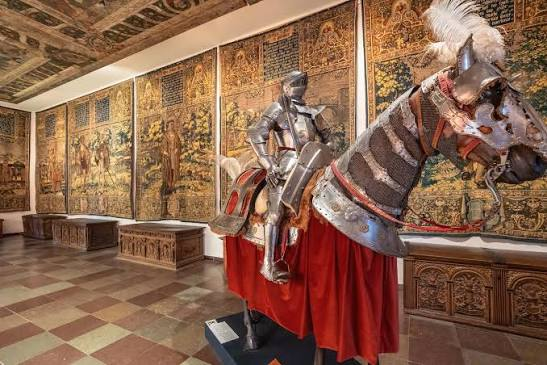

CityLoop Quest Copenhague


L’histoire de Copenhague avance par poussées, souvent déclenchées par une guerre, un incendie ou une décision royale. La ville médiévale grandit autour du port et de la forteresse d’Absalon, puis devient le siège de la monarchie au XVe siècle. La Réforme luthérienne de 1536 bouleverse les institutions religieuses : les biens de l’Église passent à la Couronne, l’université est réorganisée et les anciennes pratiques catholiques disparaissent progressivement des églises.
Le XVIIe siècle est celui des grands chantiers de Christian IV, mais aussi des conflits avec la Suède. En 1658-1659, Copenhague résiste à un siège mené par Charles X Gustave. Habitants, soldats et étudiants participent à la défense des remparts. La capitale devient le symbole d’un royaume menacé mais encore capable de tenir. Quelques années plus tard, l’absolutisme est instauré en 1660, renforçant la centralisation du pouvoir autour de la cour.
Deux catastrophes marquent le XVIIIe siècle. La peste de 1711 tue environ un tiers des habitants. Le grand incendie de 1728 détruit une large partie de la ville, puis celui de 1795 ravage d’autres quartiers. Ces désastres entraînent des règles nouvelles, des rues élargies et une architecture plus sobre. Frederiksstaden, quartier d’Amalienborg, naît à partir de 1749 comme une composition aristocratique ordonnée autour d’un axe monumental.
Les guerres napoléoniennes frappent directement la capitale. En 1801, la flotte britannique attaque lors de la bataille de Copenhague. En septembre 1807, la Royal Navy bombarde la ville afin de saisir la flotte danoise ; des civils sont tués et de nombreux bâtiments brûlent. Après la faillite de l’État en 1813 et la perte de la Norvège en 1814, le Danemark entre dans une période de recomposition politique et culturelle.
La Constitution de 1849 met fin à l’absolutisme. Copenhague déborde alors de ses remparts, accueille usines et populations ouvrières, puis développe tramways, chemins de fer et grands équipements. L’occupation allemande de 1940 à 1945, le sauvetage des Juifs en 1943 et la libération de mai 1945 forment une autre séquence décisive. Depuis la fin du XXe siècle, la reconversion du port, le pont de l’Øresund ouvert en 2000 et le métro ont placé la capitale dans une région transfrontalière tournée vers Malmö.